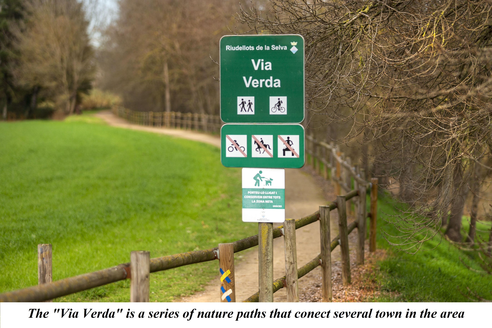
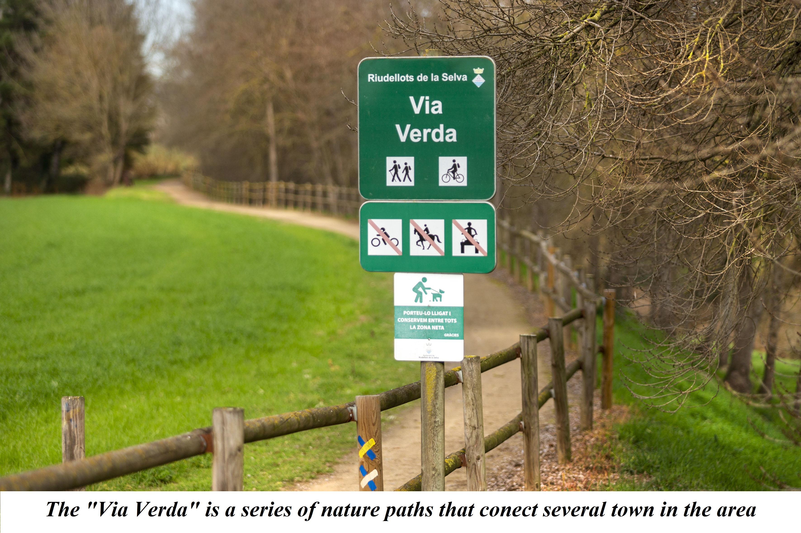

Riudellots is the perfect quiet getaway for people looking
to flee the city's bustling sound. It can also be the perfect
weekend plan, whether it's to enjoy it's nature or it's
atmosphere.
Riudellots' name in Catalan means "Muddy River", this is in
reference to the fact that in 1964 the town was flooded with
4m of mud after the river overflowed. What was it called beforehand you ask?
Only god knows.
The town is located in the province of Girona, in Catalonia,
Spain. It is located 12km away from Girona's capital and 92km
from Barcelona. It has a population of around 4,000 people and
an area of 13.1 km².
Riudellots also enjoys a variaety of local restaurants, with the
main attractions being "Pizzeria 33" & "Via Augusta".
*Note that "Pizzeria 33" is closed on weekdays*

 
